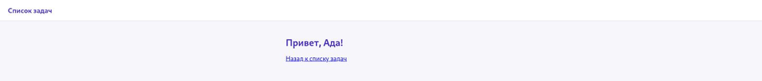

Первое веб-приложение на Flask
Flask — лёгкий веб-фреймворк для создания веб-приложений на Python.
Flask — лёгкий веб-фреймворк для создания веб-приложений на языке Python. Он предоставляет маршрутизацию, объекты запроса и ответа, работу с шаблонами Jinja и другие базовые средства, необходимые серверному приложению. Сам Flask не принимает сетевые соединения напрямую — этим занимается отдельный сервер (раздел 22.19 объясняет эту границу подробнее); при локальном запуске Flask временно берёт эту роль на себя через встроенный сервер разработки Werkzeug. Установка — как у любой библиотеки:
pip install flaskСамое маленькое Flask-приложение
from flask import Flask
app = Flask(__name__)
@app.route("/")
def glavnaya():
return "Привет, мир!"
if __name__ == "__main__":
app.run(debug=True)@app.route("/") регистрирует маршрут: связывает адрес / с функцией glavnaya(), которая обрабатывает запрос к этому адресу и формирует ответ. Этот механизм подробно рассматривается в разделе 22.11.Шаблоны — HTML с выражениями Jinja
Возвращать HTML прямо строкой в Python неудобно. Flask использует движок шаблонов
Jinja (раздел 22.12 рассматривает его подробно) — это отдельный язык
шаблонов со своим синтаксисом: обычный HTML-файл, куда можно вставлять выражения и
управляющие конструкции Jinja в фигурных скобках
{{ }}:
<h1>Мой список задач</h1>
<ul>
{% for zadacha in zadachi %}
<li>{{ zadacha }}</li>
{% endfor %}
</ul>from flask import Flask, render_template
app = Flask(__name__)
zadachi = ["Выучить основы Python", "Собрать сайт на Flask"]
@app.route("/")
def glavnaya():
return render_template("index.html", zadachi=zadachi)Динамические адреса
Часть адреса можно превратить в параметр маршрута — Flask передаёт его значение аргументом функции-обработчика:
@app.route("/privet/<imya>")
def privet(imya):
return render_template("privet.html", imya=imya)/privet/Сергей, вы получите в переменной imya строку "Сергей" — эту часть адреса Flask передаёт функции-обработчику как аргумент.
Принимаем данные из формы
Чтобы пользователь мог что-то отправить на сервер (например, добавить задачу),
используется HTML-форма и маршрут, принимающий метод POST
(почему именно POST, а не GET — в разделе 22.13):
from flask import request, redirect, url_for
@app.route("/dobavit", methods=["POST"])
def dobavit():
novaya_zadacha = request.form.get("zadacha", "").strip()
if novaya_zadacha:
zadachi.append(novaya_zadacha)
return redirect(url_for("glavnaya"))Готовый мини-сайт «Список задач»
Маршруты, шаблоны, форма и статический CSS-файл из этого раздела собраны в готовый мини-сайт «Список задач»:
projects/flask/todo-app/app.py
python app.py в терминале внутри projects/flask/todo-app/, затем откройте http://127.0.0.1:5000/ в браузере. Так запускается сервер разработки; чем он отличается от рабочего развёртывания — в разделе 22.34.Сейчас задачи хранятся в обычном списке Python и исчезают при перезапуске программы — почему это проблема, объясняет раздел 22.20, а разделы 22.20-22.29 постепенно заменят список на базу данных SQLite.
Добавьте в index.html строку, показывающую общее количество задач: {{ zadachi|length }}.
Добавьте маршрут /udalit/<int:indeks>, который удаляет задачу по её номеру в списке и делает редирект на главную.